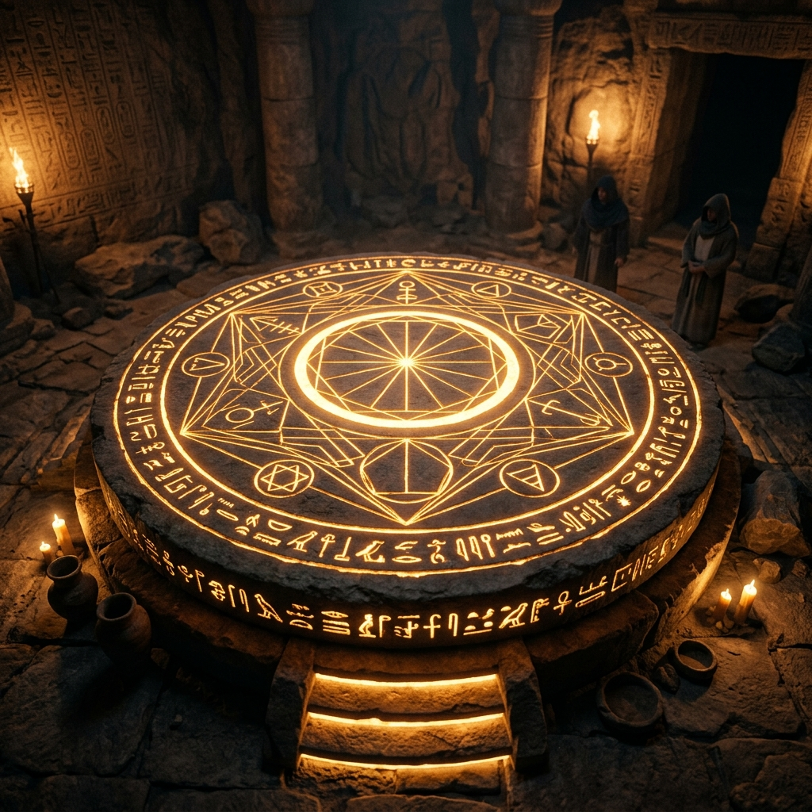
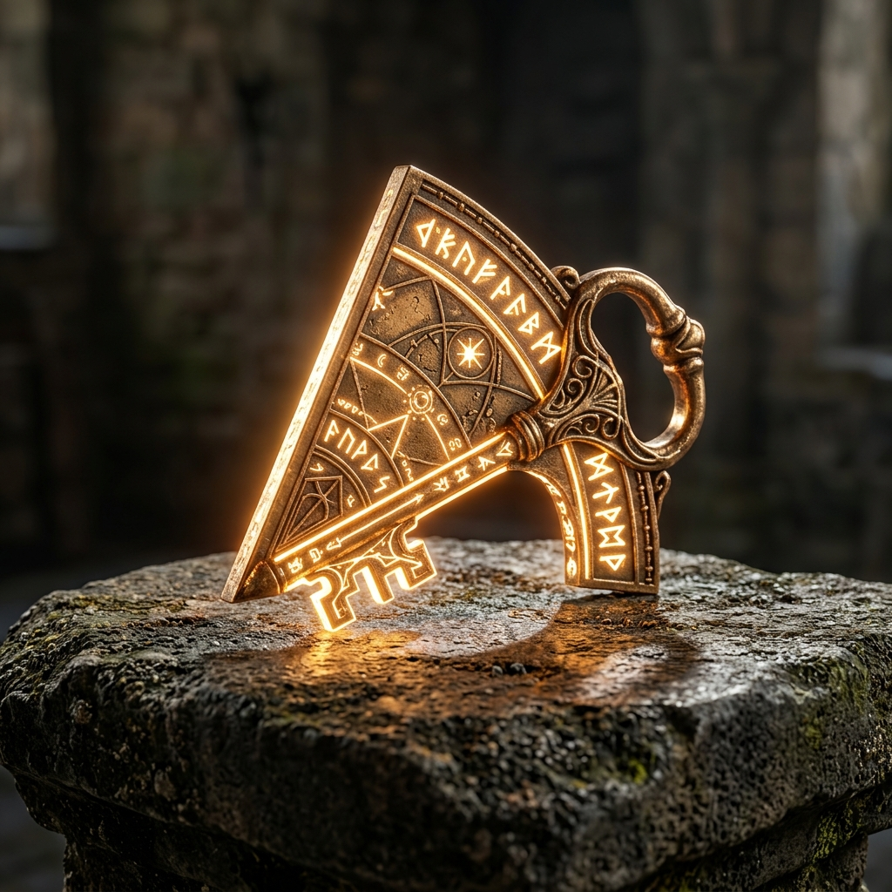

1924년, 이집트 왕가의 계곡 외곽. 한 달째 몰아치던 기록적인 모래 폭풍이 잦아들자, 깎아지른 절벽 아래로 전설로만 전해지던 '아문-라의 잊혀진 태양 신전'의 입구가 웅장한 모습을 드러냈습니다. 이 신전은 고대 이집트 최고의 수학자와 건축가들이 모여 빛의 에너지를 다루기 위해 설계했다고 알려져 있습니다.
당신은 세계 각국에서 모인 최고의 수학 전문가들로 구성된 비밀 탐사대의 핵심 연구원입니다. 조심스럽게 신전 최하층에 위치한 거대한 '거울 미궁'에 발을 들이는 순간, 앞장서던 대원이 무심코 바닥의 황금 타일을 밟고 말았습니다.
"쿠르르르릉-!"
섬뜩한 굉음과 함께 육중한 화강암 문이 닫히며 퇴로가 차단되었습니다. 동시에 천장이 기계음과 함께 열리며, 지름이 10미터는 족히 되어 보이는 거대한 돋보기 렌즈를 통해 맹렬한 사막의 태양빛이 직사광선처럼 쏟아져 내리기 시작합니다.
귀에 꽂힌 무전기를 통해 지상 베이스캠프에 남은 탐사대장의 다급한 외침이 들려옵니다.
『신전 내부의 온도가 급격히 상승하고 있다! 시뮬레이션 결과, 정확히 45분 뒤면 내부 온도가 1000도를 넘어 모든 대원들이 잿더미가 될 거다! 거울의 반사각을 조절해 태양빛 에너지를 신전 동력으로 전환시켜 탈출구를 열어라!』
생존을 위한 카운트다운이 시작되었습니다. 거울 미궁에 숨겨진 12개의 기하학적 수수께끼를 연속으로 풀어내십시오!

제 1관문: 광학 네트워크 설계
🚨 [대원의 비명] "대장님! 천장에서 쏟아지는 주 광선이 첫 번째 방의 거울 기둥들에 부딪혀 사방으로 난반사되고 있습니다! 주변 벽들이 벌써 시뻘겋게 달아오르고 있어요!"
눈을 뜰 수 없을 만큼 눈부신 빛줄기 사이로, 고대 문자가 빼곡히 새겨진 십각형(10각형) 구조의 거울 기둥들이 방을 빙 둘러싸고 있는 것이 보입니다. 바닥에 떨어진 고문서 조각에는 이렇게 적혀 있습니다.
'태양의 분노를 잠재우려면, 기둥들이 서로를 온전히 바라보게 하라. 빛은 이웃을 건너뛰어 곧게 나아가야 비로소 힘이 흩어지리라.'
빛의 에너지를 안전하게 분산 흡수하려면, 이 십각형 기둥들 사이를 잇는 '모든 가능한 대각선 경로'에 비상용 반사 거울을 촘촘히 설치하여 완벽한 네트워크를 구축해야 합니다. 단 하나라도 빼먹으면 열기가 집중되어 방이 폭발해버릴 것입니다!
Q1. [대각선의 총 개수]
십각형 모양의 기둥 배치에서 모든 기둥끼리 서로 빛을 교차 연결하려고 한다. 이웃하지 않은 기둥끼리 연결하여 설치해야 하는 총 대각선 반사광의 개수를 구하시오.
광학 네트워크 연결 오류! 열기가 치솟습니다! (힌트: n각형 대각선 개수는 n(n-3)/2)
제 2관문: 프리즘 밸런스 붕괴
🔥 [궤도 수정 1단계]
대각선 네트워크가 완성되자 수십 가닥으로 분산된 빛이 웅장한 소리를 내며 방 중앙의 거대한 '삼각형 모양 유리 프리즘'으로 완벽하게 모여듭니다.
그러나 시스템 패널에 붉은색 오류 코드가 뜹니다. 오랜 세월 동안 프리즘 내부에 불순물이 쌓여, 빛이 제대로 굴절되지 못하고 갇혀버린 것입니다! 빛 에너지가 임계점을 돌파하기 직전입니다.
시스템 복구를 위해 프리즘의 세 내각의 밸런스를 수학적으로 재조정해야 합니다. 스캐너로 분석한 결과, 현재 세 내각 중 두 내각의 크기가 각각 50°와 70°로 틀어져 측정되었습니다. 빛의 완벽한 공명점인 마지막 세 번째 내각의 크기는 도대체 얼마로 맞추어야 합니까?
Q2. [삼각형의 내각의 합]
어느 삼각형 모양의 프리즘에서 두 내각의 크기가 각각 50°, 70°일 때, 나머지 한 내각의 크기를 구하시오.
프리즘 밸런스가 맞지 않습니다! 프리즘에 균열이 생깁니다!
제 3관문: 긴급 궤도 수정
🔥 [궤도 수정 2단계] "삐- 삐- 삐-!"
프리즘의 내각 밸런스를 바로잡자 빛이 마침내 반사되어 뿜어져 나옵니다! 하지만 안도하기도 잠시, 무언가 잘못되었습니다. 반사판의 회전축이 굳어 있어, 뿜어져 나온 빛이 방화벽이 아닌 옆면의 오래된 벽화를 직접 비추고 있습니다. 벽이 촛농처럼 무섭게 녹아내리며 천장이 굉음을 내며 무너져 내립니다.
"큰일 났습니다! 반사판 궤도가 틀어졌어요! 빛을 지하 냉각수로 향하는 배기구로 꺾어 보내야 합니다!"
빛을 반사시키는 이 거대한 삼각형 반사판의 안쪽 두 내각은 현재 각각 45°와 60°로 세팅되어 있습니다. 빛이 안전한 흡수구로 빠져나가게 하려면, 반사판을 회전시켜 빛이 꺾여나가는 반대쪽 외각(x)의 크기를 정확히 알아내야 합니다!
Q3. [삼각형의 외각]
삼각형 모양 반사판에서 두 내각이 각각 45°, 60°일 때, 이와 이웃하지 않는 외각 x의 크기를 구하시오.
반사판 각도가 어긋났습니다! 벽이 녹아내립니다!
제 4관문: 아누비스의 잠금장치
🧩 [비밀통로 발견]"치이익- 슈우우-"
여러분이 입력한 각도에 맞춰 반사판이 돌아가며 주 광선이 바닥의 구멍으로 쏘아지자, 바닥 아래에서 거대한 증기가 뿜어져 나오며 숨겨져 있던 회전 다이얼이 솟아오릅니다.
다이얼 중심에는 7개의 이집트 신들의 머리가 정교하게 조각된 칠각형 석판이 자리 잡고 있습니다.
"이건... 죽음의 신 아누비스의 잠금장치입니다. 함부로 건드리면 독가스가 분사된다고 합니다."
석판의 가장자리에는 7개의 각 모서리의 내각 크기를 모두 더한 합을 정확히 입력해야만 맞물려 돌아가는 톱니바퀴가 있습니다. 톱니바퀴가 빛의 열기를 받아 달아오르고 있습니다. 장치가 완전히 녹아붙기 전에 서둘러 칠각형의 모든 내각의 합을 알아내 입력하세요!
Q4. [다각형의 내각의 합]
다이얼을 회전시키기 위해, 칠각형 모양 석판의 모든 내각의 크기의 합을 구하시오.
다이얼이 꿈쩍도 하지 않습니다! 기어가 녹아내립니다! (힌트: 180 × (n-2))
제 5관문: 다각형 복도의 진실
🚪 [비밀 복도의 문] 죽음의 다이얼을 열고 지하로 한 층 더 내려가자, 이번에는 정체를 알 수 없는 거대한 다각형 문양(오각형, 팔각형, 십이각형 등)이 수없이 새겨진 긴 복도가 나타납니다.
복도 끝의 육중한 돌문 앞 패드에는 『모든 다각형을 아우르는 절대적인 수를 입력하라』고 적혀 있습니다.
동료 대원이 스캐너 기록을 다급하게 읽어 내립니다. "대장님! 어떤 복잡한 모양의 볼록 다각형이든, 외각의 크기를 모두 합치면 항상 이 '일정한 값'이 나온다고 합니다! 그 절대적인 숫자가 문을 여는 마스터 패스워드입니다!"
뒤에서부터 복도의 바닥이 무너져 내리고 있습니다! 어떤 다각형이든 성립하는 그 절대적인 숫자는 무엇입니까?
Q5. [다각형의 외각의 크기의 합]
n각형에서 외각의 크기의 합은 항상 일정한 각도를 가집니다. 이 절대적인 각도는 얼마입니까?
비밀번호가 틀렸습니다! 바닥이 계속 무너집니다!

제 6관문: 파라오의 진정한 이름
☀️ [태양의 상징] 마스터 패스워드를 입력하자 바닥 붕괴가 멈추고 2구역의 메인 홀이 나타납니다. 그곳엔 황금빛으로 찬란하게 빛나는 거대한 금속 문이 여러분의 앞을 굳건히 가로막고 있습니다.
문의 양옆에는 거대한 스핑크스 조각상이 서 있고, 중앙의 벽화에는 상형문자로 고대의 수수께끼가 적혀 있습니다.
『나는 신들이 빚어낸 완벽한 대칭을 이루는 형상. 나의 한 외각의 크기는 정확히 36°이니라. 나의 잃어버린 이름을 부르고, 나의 품 안에 간직된 하나의 내각의 크기를 말하는 자만이 태양의 축복을 받아 이 문을 통과하리라.』
스캐너를 확인하던 대원이 사색이 되어 외칩니다.
"금속 문 뒤편에 거대한 폭약 장치가 있습니다! 단 한 번이라도 오답을 입력하면 신전 전체가 붕괴될 겁니다! 신중하게 완벽한 정답을 찾아야 합니다!"
Q6. [정다각형의 내각과 외각]
'한 외각의 크기가 36°인 정다각형'의 이름을 찾고, 이 정다각형의 한 내각의 크기를 구하시오.
폭발 카운트다운이 시작됩니다!! (힌트: 360/외각 = n)
제 7관문: 거대 톱니바퀴의 제원
⚙️ [구동 체인 연결] "철컥- 삐걱!"
정답을 맞췄지만 굉음과 함께 문이 움직이다가 중간에 멈춰버렸습니다. 금속 문을 움직이는 옆 벽면의 거대한 원형 톱니바퀴에서 구동 체인이 끊어져 버린 것입니다!
새로운 체인을 예비 창고에서 꺼내와 이 거대한 톱니바퀴의 테두리를 한 바퀴 완벽하게 감아야 문을 열 준비를 마칠 수 있습니다.
스캐너로 분석한 결과, 이 원 모양의 톱니바퀴는 반지름의 길이가 12cm입니다. 빈틈없이 톱니바퀴 테두리를 한 바퀴 감싸기 위해 필요한 체인(원의 둘레)의 길이는 얼마입니까?
※ 파이(π)는 한글로 '파이' 혹은 영어로 'pi' 라고 입력하세요. (예: 10파이)
Q7. [원의 둘레]
반지름의 길이가 12cm인 원의 둘레의 길이를 구하시오.
체인의 길이가 맞지 않아 기어가 헛돕니다! (힌트: 원의 둘레 = 2πr)
제 8관문: 동력 렌즈 교체
🛡️ [렌즈 파손 비상] 체인을 연결하여 동력을 복구했지만, 문 윗부분에 박혀 빛의 에너지를 문으로 전달해주던 둥근 동력 렌즈가 과부하로 산산조각이 나버렸습니다!
다행히 방 구석에 고대 제사장들이 남겨둔 다양한 크기의 예비 원형 렌즈 보관함이 있습니다. 하지만 렌즈마다 받아들이는 빛의 용량(면적)이 다릅니다.
장비 설명서의 상형문자를 해독해보니, "반지름이 5cm인 렌즈의 전체 넓이만큼의 빛을 투과시켜야만 메인 회로가 불타지 않는다"고 적혀 있습니다. 정확히 이 면적을 가진 렌즈를 시스템 패널에서 골라 끼워 넣어야 합니다. 넓이가 얼마인 렌즈를 선택해야 합니까?
Q8. [원의 넓이]
반지름의 길이가 5cm인 원의 넓이를 구하시오.
면적이 너무 큽니다! 회로가 타들어가고 있습니다! (힌트: 원의 넓이 = πr²)
제 9관문: 동력 전달의 기하학
⚙️ [톱니바퀴 조작] 렌즈를 무사히 교체하자 기계가 다시 윙윙거리며 작동을 시작합니다. 이제 이 무거운 석판 톱니바퀴를 밀어 올려 문을 완전히 개방해야 합니다.
고대 건축가의 기록에 따르면 이 톱니바퀴 석판은 회전하는 중심각의 크기에 따라 테두리 호의 길이가 정비례하여 움직입니다. 기록서의 내용은 이렇습니다. '중심각이 40° 회전할 때 석판 테두리의 호는 6cm를 이동한다.'
현재 문이 사람이 지나갈 수 있을 만큼 완전히 열리는 지점은 기계 장치의 걸쇠가 걸리는 곳으로, 호의 길이가 정확히 24cm 이동한 곳입니다.
"이 무거운 석판은 관성 때문에 한 번 돌리기 시작하면 중간에 멈출 수 없습니다. 처음부터 정확한 각도만큼 힘을 주어 한 번에 밀어 올려야 기어가 완벽하게 맞물립니다! 몇 도를 회전시켜야 합니까?"
Q9. [중심각과 호의 길이 비례]
중심각이 40°일 때 석판 테두리 호의 길이가 6cm라면, 호의 길이를 24cm 지점까지 돌리기 위해 맞춰야 할 중심각의 크기는 얼마인가?
톱니바퀴가 헛돕니다! 기어가 역류합니다! (힌트: 중심각과 호의 길이는 정비례)
제 10관문: 부서진 태양의 원반
🔑 [마지막 코어룸] 금속 문을 힘겹게 통과하자, 마침내 신전의 가장 깊은 곳 '코어룸'이 나타납니다. 방 한가운데에는 투명한 물로 가득 찬 원형 수조가 있고, 바닥에는 지상으로 곧장 연결되는 탈출 캡슐 덮개가 보입니다.
수조 덮개의 주변 바닥에는 누군가 일부러 부숴놓은 듯한 '부채꼴 모양의 조각'들이 널브러져 있습니다. 벽에 새겨진 안내문에 따르면, 이 조각을 덮개 홈에 끼워 넣고 조각의 둥근 테두리 틈새를 전도성 물질인 '태양의 금실'로 한 치의 오차도 없이 메워야만 마법 같은 봉인이 풀린다고 합니다.
당신이 집어 든 핵심 부채꼴 조각은 반지름이 9cm, 중심각이 120°입니다. 이 조각의 둥근 부분(호)을 빈틈없이 완벽하게 덮기 위해 잘라야 할 금실의 길이는 과연 얼마입니까?
Q10. [부채꼴의 호의 길이]
반지름의 길이가 9cm이고 중심각의 크기가 120°인 부채꼴의 호의 길이를 구하시오.
금실의 길이가 맞지 않습니다! 전류가 튀며 금실이 타버렸습니다!
제 11관문: 수조 제어판의 기하학
💧 [수조 제어판 개방] 금실을 알맞게 재단하여 틈새를 메우는 순간, 푸른 스파크가 튀며 수조 덮개 위로 '빛의 홀로그램 제어판'이 떠오릅니다!
제어판 중심에는 부채꼴 모양의 렌즈 구멍이 비어있으며, 빛이 이 구멍을 통과하는 '면적'만큼 탈출 캡슐 모터에 동력이 공급되는 시스템입니다.
비어있는 렌즈의 규격은 반지름 6cm, 중심각 60°인 부채꼴 모양입니다. 시스템에 이 렌즈가 받아들일 수 있는 빛의 '넓이(면적)' 값을 정확히 계산하여 입력해야만 캡슐이 개방을 시작합니다.
Q11. [부채꼴의 넓이]
반지름의 길이가 6cm이고 중심각의 크기가 60°인 부채꼴 모양 홈의 넓이를 구하시오.
입력한 면적이 잘못되었습니다! 동력 공급 시스템 거부!
최종 국면: 임계점 도달
⏱️ [신전 붕괴 위기]"삐- 삐- 삐- 삐-!!"
면적을 입력하자 수조 덮개가 덜컹거리며 열리는 듯했지만, 갑자기 신전 전체가 미친 듯이 요동치기 시작합니다! 천장의 거대한 화강암 바위들이 쩍쩍 갈라지며 바닥으로 곤두박질칩니다.
"온도계가 1000도에 도달하고 있다!! 천장이 무너진다! 남은 시간은 단 2분뿐이다!!"
"대장님!! 메인 동력만으로는 덮개를 완전히 열 수 없습니다!! 벽에 숨겨진 보조 동력장치를 강제로 켜야 해요!"
먼지 구름 속에서 뜯어낸 보조 동력장치 패널에는 반지름이 10cm, 호의 길이가 5π cm인 거대한 비상용 부채꼴 석문이 그려져 있습니다. 중심각의 크기를 모르는 상태에서 호의 길이 정보만으로 이 부채꼴 석문의 전체 넓이를 역산해서 빠르게 시스템에 강제 입력(오버라이드)해야만 캡슐이 완전 개방됩니다!
실패하면 이 무덤에서 영원히 잠들게 됩니다. 당신의 마지막 수학적 직관을 발휘하십시오!
Q12. [부채꼴의 넓이 응용]
반지름의 길이가 10cm이고 호의 길이가 5π cm인 부채꼴 모양 석문의 넓이를 구하시오.
수조 덮개가 열리지 않습니다! 폭발 10초 전! 9, 8, 7...
탈출 성공!
떨리는 손으로 마지막 정답 '25π'를 보조 다이얼에 입력하고 엔터 키를 내리치는 순간!
"콰가가가강-!!"
신전이 통째로 폭발하듯 흔들리더니, 굉음과 함께 굳게 닫혀있던 탈출용 덮개가 튕겨나가며 비상 탈출 캡슐이 솟아오릅니다. 탐사대원들은 필사적으로 몸을 던져 캡슐에 탑승합니다.
캡슐이 엄청난 속도로 지상을 향해 솟구쳐 오름과 동시에, 등 뒤로 뜨거운 열기를 내뿜던 신전의 모든 기계장치가 거대한 불길에 휩싸이며 영원한 침묵의 잿더미 속으로 가라앉습니다.
캡슐의 문이 열리고, 눈을 뜰 수 없이 밝은 사막의 눈부신 태양광과 뺨을 스치는 시원한 모래바람이 대원들을 반깁니다. 지상 베이스캠프의 동료들이 환호성을 지르며 달려옵니다.
당신은 12단계의 험난한 기하학적 난관을 돌파하고, 죽음의 문턱에서 고대 이집트의 위대한 광학적 비밀을 풀고 살아남은 전설의 탐사대원이 되었습니다!